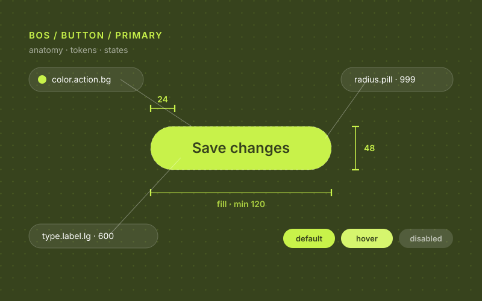

BOS Design System — the DS behind a B2B platform.
The active design system serving TemaBit’s B2B platform: BitCore IAM (in production), BitSubscription, BitAuth and Bit Billing. Storybook as source of truth, weekly readiness rituals, Claude-Skills automations and a governance model built for cross-team velocity.

A DS treated as a product, not a Figma library.
TemaBit is the IT subsidiary of Fozzy Group and writes around 80% of the holding’s software. BOS is its B2B platform — BitCore IAM in production, with BitSubscription, BitAuth and Bit Billing in development. Multiple product teams, a single platform identity, and a small DS team holding it all together.
I lead the design system, currently as a team of one (it used to be two). The job is half craft, half product management: backlog, roadmap, governance, contribution flow, lifecycle.
Governance first, components second.
The hard part of a DS isn’t the components — it’s the process around them. Prioritisation, transparency, releases, change-management, accessibility commitments.
- Storybook as source of truthComponent specs, variants, props and code live in Storybook — Figma points to it, not the other way around.
- Readiness trackerA live Confluence table maintained via a custom Claude Skill (bos-ds-tracker) that I built into the team’s rituals.
- Weekly automationA scheduled task surfaces design tasks without FE, and FE tasks missing story points — fed straight into refinement.
- ADRs for design decisionsArchitecture Decision Records make trade-offs explicit and historical context recoverable.
- Lifecycle stagesPlanned · In progress · Ready · Deprecated — visible to every product designer, not just the DS team.
Foundations, components, automation.
- Token foundationsColour today; spacing, typography and radius planned. WCAG 2.1 AA encoded at the token layer.
- New component variantsMobile empty state, tab error state, read-only field, Button radius LG (8px), checkbox, filters panel, app switcher, scrollbar.
- FE-shipped componentsMobile navigation, MoreWindow, grid popover, Select/Textarea/TimePicker/DatePicker (read-only), navigation bar with nested menu, drawer, templates.
- Claude Skillsbos-ds-tracker, jira-create-task, design-clarify — automation built into the team workflow, not separate from it.
- Mobile patterns as first-class citizensMobile drawer, mobile navigation, calendar bottom sheet, mobile empty states — not desktop stretched.
A system that ships and a process that holds.
The bigger outcome is qualitative — the DS now operates as a product with its own roadmap, release rhythm and contribution model. Product designers can see what’s ready, propose changes, and ship without bottlenecking on the DS team for every variant.
Three lessons I’m carrying forward.
- Storybook beats Figma as source of truthCode is the artifact engineers ship. Specs that don’t live in code drift within weeks.
- Automation is leadership at scaleA weekly Claude Skill that nudges the team is worth more than the same nudge from me, manually, on Slack.
- Lifecycle visibility unblocks teamsWhen product designers can see status without asking, they stop asking. The DS team gets its focus time back.
If you liked this, also see…
Found this through Upwork?
Then you already know where to reach me. Send the brief through your Upwork job post or an invite — I usually reply within a working day.